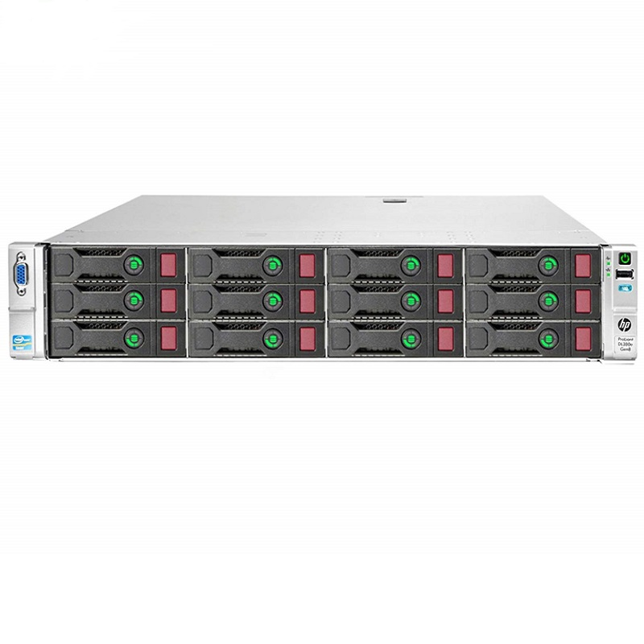
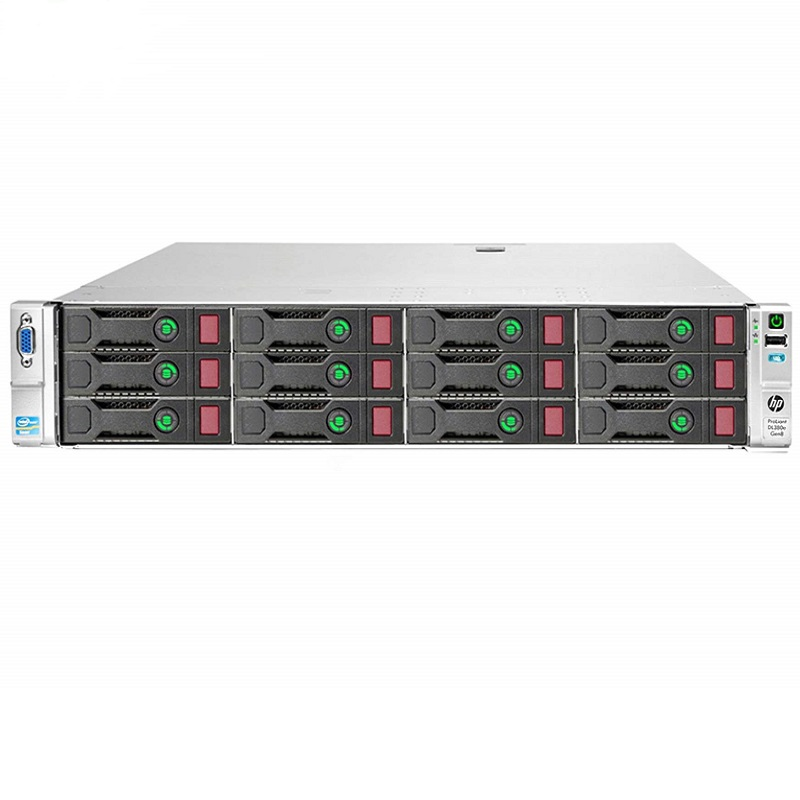

1. KYGnus NAS
High-performance network attached storage solution based on openSUSE and BunsenLabs.
- Supports All Linux Filesystems: ext4, XFS, Btrfs, ZFS
- Disk Management: View disk info, set up RAID arrays, check bad blocks (mdadm)
- Backup Management: Perform backups using tar, borg, or dd
- Firewall Management: Manage firewall rules using firewalld
- Antivirus Management: Run scans with ClamAV, Maldet, RKHunter, Chkrootkit, and YARA
- User Management: Add or delete system users
- NFS Management: Configure NFS shares for network storage
- Storage Management: Mount and unmount storage devices
- Disk Health Check: Check disk health with SmartTools
- Monitoring: Running on port 19999 with Netdata
- Service Management: Manage services with systemd
- Web-based Administration: Intuitive web interface
- Docker Support: Containerized application support
- Open-Source Stack: Built entirely on open-source technologies
Custom configurations available
Inquire Now
2. KYGnus Media Server
Complete Linux-powered media streaming solution featuring Plex, Jellyfin, and Kodi integration - transforming your system into a professional audio/video content server for local networks or internet streaming.
- 4K transcoding capabilities: with hardware acceleration
- 🔒 Enterprise-grade Security:
- Hardened OS: Specially configured for media hosting
- Custom Tools Support: Allows installation of security tools for professionals
- 🖥️ Flexible Hardware Support:
- Versatile Compatibility: From HP mini-PCs to DL/ML/BL server series
- Right-Sized Builds: Hardware selection based on actual needs
- ⚙️ System-level Optimization:
- Optimized Stack: Software and OS tuned for media tasks
- Low Resource Usage: Smooth performance on mid-range hardware
- High Stability: Stable operation even under load
- 🔄 Upgradeable & Customizable Architecture:
- Modular Design: Open structure for adding new features
- Scalable Resources: Module and resource upgrade capability
- No Lock-In: Free from platform/software dependencies
- Automated media organization: with metadata fetching
- Remote access: multi-device compatible interface
- Optimized for Ubuntu Server: enhanced by custom KYGnus configurations
Starting at $499 (Hardware configurations vary)
Buy
3. KYGnus Security Honeypot
The KYGnus Honeypot is a high-interaction, multi-layered deception system developed for HP servers to simulate realistic Linux behavior. Designed specifically for enterprise environments, it integrates multiple honeypot layers simultaneously to cover various attack surfaces.
One of its key features is a customizable web application honeypot, tailored uniquely for each organization. Unlike generic honeypots, this approach ensures precise alignment with internal software and infrastructure, producing more accurate and context-relevant threat intelligence.
- Multi-environment Honeypots: Web, SSH, File Traps, and Custom Services
- Personalized Web Honeypots: Tailored per organization for higher accuracy
- Integrated Security Tools:
ClamAV,Maldet,RKHunter, andLynis - Advanced Firewall & WAF: Full Web Application Firewall integration
- HIDS Integration: Host-based Intrusion Detection System with
Suricata - Real-Time Threat Detection: Alerts via email and webhook integrations
- Behavioral Analysis Engine: Detects attack patterns and anomalies
- Based on BunsenLabs Linux: Lightweight and secure Linux foundation
This system aims to provide the highest level of internal security, helping organizations detect sophisticated attacks in real-time with precision.
Please Mail us to Suctomize Your HoneyPot

4. Poirot (USB App)
Poirot is a cross-platform forensic and diagnostics tool with a Flask-based web UI that enables seamless interaction with Android devices using ADB (Android Debug Bridge). It provides a secure and intuitive interface to inspect, manage, and analyze system behavior and applications.
Designed for both Linux and Windows, Poirot runs directly from a USB disk without requiring installation. This makes it ideal for forensic analysts, IT administrators, and power users who need a portable and powerful toolset.
- System Information: Retrieve details like model, Android version, manufacturer, serial number, battery level, and more
- List Installed Apps: View all applications installed on the device
- Remove Installed Apps: Uninstall user apps via package name
- Remove Default Company Apps: Clean bloatware like Samsung/Xiaomi system apps
- List All Permissions: Display all available permissions on the device
- App Permissions Analysis: Show permissions of any selected application
- Dangerous Permissions Detection: Automatically identify apps with sensitive permissions
- CPU Usage Analysis: Check what is consuming system CPU
- RAM Usage Analysis: Identify apps using excessive RAM
- USB Portable Deployment: Runs directly from USB, no setup required
- Cross-Platform Support: Compatible with Linux and Windows
5. Hermes Security Manager
Hermes is a comprehensive web-based security management platform designed to remotely monitor and protect Linux servers over SSH. Built for system administrators and cybersecurity professionals, Hermes integrates real-time monitoring, malware detection, and intrusion prevention into a single, centralized interface.
- Dashboard: Unified system overview with real-time security status
- Antivirus Scanning: Powerful malware detection using ClamAV, RKHunter, chkrootkit, and YARA
- Process Monitoring: Monitor active processes and identify malicious behavior
- Network Monitoring: Track active connections and detect suspicious IPs and ports
- File Integrity Monitoring: Verify file hashes, detect changes, and quarantine threats
- Log Management: View and analyze centralized security logs
- Service Management: Monitor and control services, identify suspicious ones
- Firewall Management: Configure firewall rules and integrate with Fail2Ban
- Kernel Module Analysis: Detect and report malicious or vulnerable kernel modules
- IDS/IPS Integration: Built-in Suricata support for intrusion detection and prevention
- Authentication: Secure login system with role-based access control (RBAC)
100% Open Source – View on GitHub
Download Now
6. myFW
myFW transforms any Debian-based Linux server into a powerful, enterprise-ready Unified Threat Management (FW) platform. Built entirely with open-source tools, it integrates multi-layered security, user management, and real-time analytics under one command-line interface.
- Multi-Engine Antivirus Scanning: ClamAV, Maldet, YARA, and RKHunter
- Intrusion Detection & Prevention: Suricata IDS/IPS with custom rule support
- Firewall Management: Service/port control with panic mode & PSAD scanning protection
- Threat Monitoring: URL-based monitoring with real-time alerts
- User Management: Add users with internet quotas and bandwidth restrictions
- Bandwidth Control: Set upload/download speeds per user
- VPN Manager: OpenVPN setup and client configuration via CLI
- Web Filtering: Domain and application-level allow/block rules
- Advanced Threat Protection: Includes sandboxing logic and auto-blocking capabilities
- Dashboard Integration: Built-in Netdata dashboard for real-time system and network health
- Optimized Kernel & Tools: Performance-focused CLI scripts and custom kernel tuning
100% Open Source – View on GitHub
Download
7. pulseNET
pulseNET is an audio management and streaming platform built for local networks. It provides a secure, minimal dashboard to manage .mp3 and .flac files with support for DLNA and AirPlay output.
- Secure user-authenticated dashboard (Flask + Flask-Login)
- Stream and manage audio files over LAN
- DLNA server integration (minidlna)
- AirPlay support via shairport-sync
- Audio upload, preprocessing (noise reduction, normalization), and FLAC→MP3 conversion
- Admin dashboard with live system status
- Searchable track table
- Gunicorn + systemd service
- NGINX reverse proxy ready
- Firewalld integrated